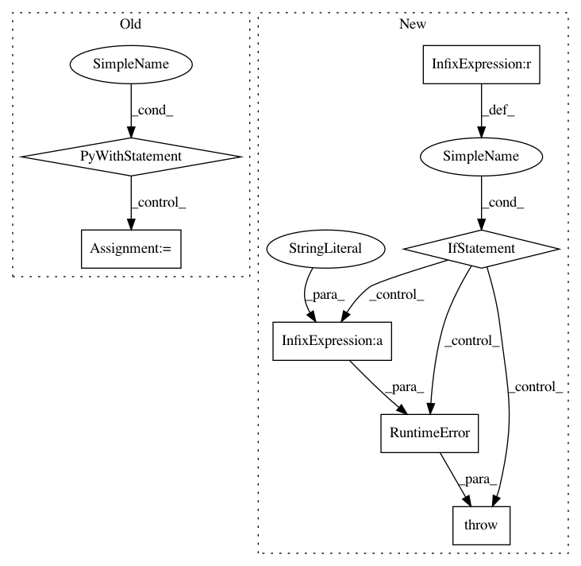

4999f9795af7a21ca69adf5f72301b79f719498e,gluoncv/model_zoo/pspnet.py,PSPNet,__init__,#PSPNet#Any#Any#Any#Any#,33
Before Change
def __init__(self, nclass, backbone="resnet50", norm_layer=nn.BatchNorm,
aux=True, **kwargs):
super(PSPNet, self).__init__(nclass, backbone, aux, norm_layer, **kwargs)
with self.name_scope():
self.head = _PSPHead(nclass, norm_layer=norm_layer, **kwargs)
self.head.initialize()
self.head.collect_params().setattr("lr_mult", 10)
if self.aux:
self.auxlayer = _FCNHead(1024, nclass, norm_layer=norm_layer, **kwargs)
self.auxlayer.initialize()
self.auxlayer.collect_params().setattr("lr_mult", 10)
def forward(self, x):
_, _, H, W = x.shape
c3, c4 = self.base_forward(x)
outputs = []
After Change
if self.aux:
self.auxlayer = _FCNHead(1024, nclass, norm_layer=norm_layer, **kwargs)
self.auxlayer.initialize()
self.auxlayer.collect_params().setattr("lr_mult", 10)
def hybrid_forward(self, F, x):
c3, c4 = self.base_forward(x)
outputs = []
x = self.head(c4)
x = F.contrib.BilinearResize2D(x, **self._up_kwargs)
outputs.append(x)
In pattern: SUPERPATTERN
Frequency: 3
Non-data size: 7
Instances
Project Name: dmlc/gluon-cv
Commit Name: 4999f9795af7a21ca69adf5f72301b79f719498e
Time: 2018-06-05
Author: 8041160+zhanghang1989@users.noreply.github.com
File Name: gluoncv/model_zoo/pspnet.py
Class Name: PSPNet
Method Name: __init__
Project Name: tensorlayer/tensorlayer
Commit Name: 2e0f0929df4b01b269962a6423d6cb78b6d3da17
Time: 2018-12-04
Author: dhsig552@163.com
File Name: tensorlayer/layers/inputs.py
Class Name: EmbeddingInput
Method Name: __init__
Project Name: tensorflow/transform
Commit Name: 6c83b47904619bcd2bbb0be73bd76e11598a755a
Time: 2017-11-30
Author: tf-transform-dev@google.com
File Name: tensorflow_transform/beam/impl.py
Class Name:
Method Name: _assert_tensorflow_version